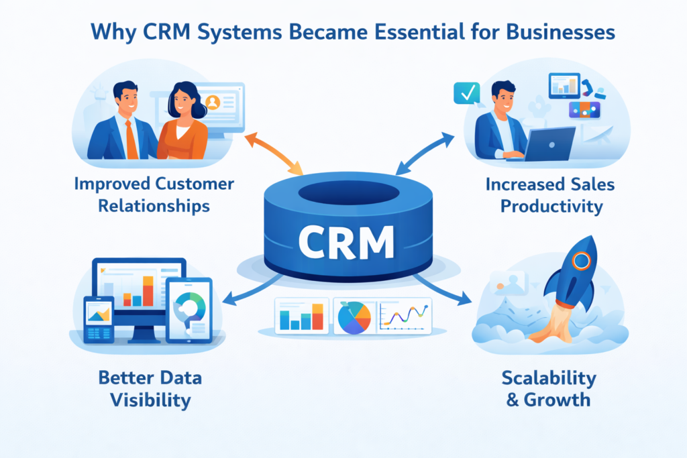

Personal Portfolio
Personal Portfolio
Description : Transforming Manual Sales Operations Through Salesforce Automation. Developed a comprehensive Customer Relationship Management (CRM) solution on the Salesforce platform to streamline lead management, sales tracking, and customer support processes. The system automates business workflows, improves team collaboration, and provides real-time visibility into sales performance.
As a Salesforce Developer, I designed and implemented a comprehensive CRM solution to streamline lead management, sales processes, and customer engagement activities. The platform centralized customer information and automated critical business workflows using Apex, Lightning Web Components (LWC), and Salesforce Flows.
The solution enabled sales teams to track opportunities efficiently, automate approval processes, and gain real-time visibility into performance metrics through interactive dashboards and reports. By eliminating manual processes and improving data accuracy, the application significantly enhanced productivity and decision-making capabilities across the organization.
Technologies: CRM, Apex, LWC, SOQL, Salesforce Flows, Visualforce
Key Achievement: Reduced manual sales operations by 60% and improved lead conversion tracking through automation.

Description: Developed a web-based Employee Management System that enables organizations to manage employee information, attendance records, departments, and performance data through a centralized platform. The application provides secure access and real-time employee management capabilities.
Developed a centralized Employee Management System to simplify HR operations and improve workforce administration. The application provides secure access to employee records, attendance tracking, department management, leave requests, and performance monitoring through a responsive web interface.
system was designed to reduce administrative workload and improve data accessibility by replacing manual record-keeping processes with a digital platform. Role-based authentication and intuitive dashboards enabled HR teams and managers to efficiently manage employee information and generate reports.
Technologies: HTML5, CSS3, JavaScript, React.js, Node.js, Express.js, MySQL
Key Achievement: Improved HR operational efficiency by centralizing employee data and automating administrative processes.

Description : Built a modern e-commerce platform that allows customers to browse products, add items to the cart, place orders, and manage their profiles. The system includes secure authentication, payment integration, and order tracking functionality.
Built a full-stack e-commerce platform that provides customers with a seamless online shopping experience. The application allows users to browse products, search and filter items, manage shopping carts, place orders, and track purchases through a user-friendly interface.
The platform includes secure user authentication, order management functionality, and responsive design principles to ensure accessibility across multiple devices. The project demonstrates expertise in both front-end and back-end development while focusing on performance, scalability, and user experience.
Technologies: React.js, JavaScript, Node.js, Express.js, MongoDB, HTML5, CSS3
Key Achievement: Delivered a scalable online shopping solution with improved customer engagement and streamlined order processing.